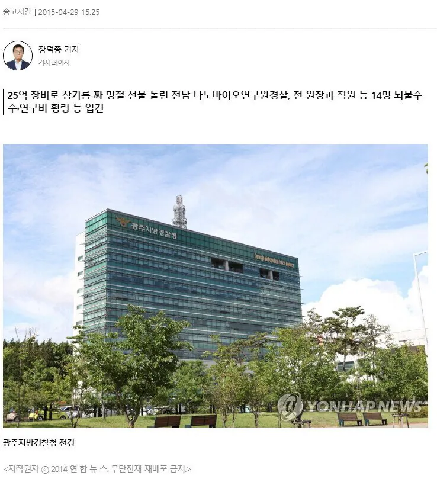
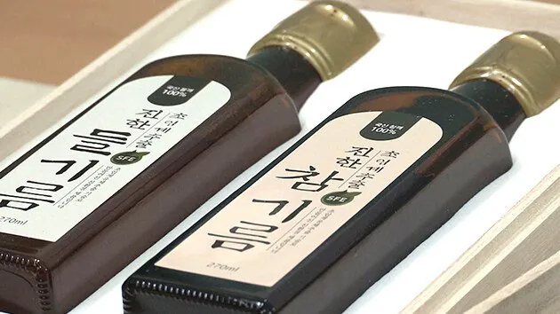
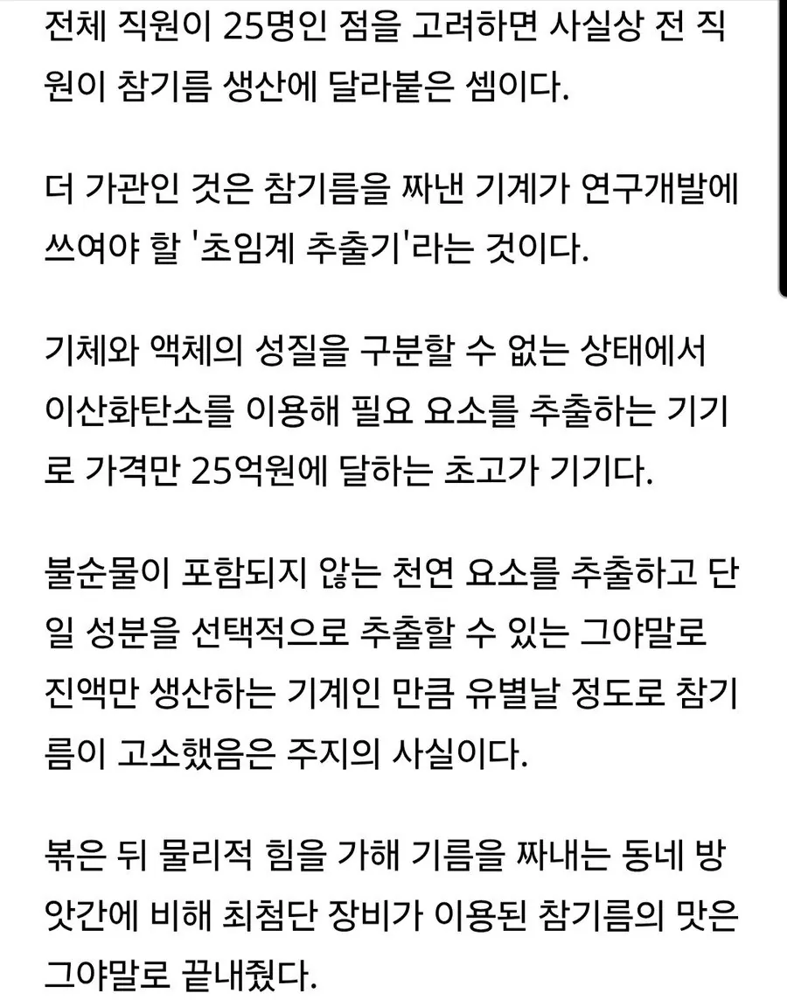

완벽한 참기름ㄷ



완벽한 참기름ㄷ
참기름 맛있는게 궁금할수 있잖아 깨어있는척 ㄴㄴ
네이버뉴스탭이어울리는 인재인데 어쩌다 개드립까지 기어들어왔냐
너가더 역한데
오메가3 초임계로 저온에서 추출안하면 어쩌고 저쩌고 해서 초임계만 사먹음
심지어 한정판돰
실제 참기름 연구라고 했으면 전개가 달랐을텐데
맛없다는 이야기도있던데 일단 비싸더라좀
와인 샤프란 이런거 하이엔드급 물건들 초고가에 거래되는거보면 한식의 극한을 본다는 컨셉으로 미친품질로 소량생산해서 프리미엄 붙여 팔면 국내 재벌 회장들이나 글로벌 한식매니아들한테 수요가 있지 않을까
이미 상품화 했었는데 시원하게 망함
시장에 이미 암암리에 거래되는 시골찐챔기름의 가성비를 못이김
머리를써야지.. 저걸 비싸게 팔아서 돈을 벌고 그걸로 또 기계를 사서 원래 하려고 했던 연구를 하란 말얏!
와 존나무서운생각이드는데 저런기계를 멕시코갱단이가지고있으면 브레이킹베드마냥 순도좆되는 약만들어서 팔아먹을수도있겠네? 25억이면 그런 카르텔한테는 비싼돈아닐테고
장비를 안팔지... 저런 초고가기계들은 사는사람도 엄격하게 가릴걸?
걔들한테 합법적 파는물건이라 온갖무기에 잠수함 비행기까지 가지고있는게아니니까 문제지.. 반군이나 저기 중동 테러리스트는 사는사람안가려서 미사일까지 가지고있겠음..? 대놓고는 당연히안팔지 ㅋㅋㅋ 브베봐도 장비들다 유럽에서 세탁을거쳐서 가지고들어와서 조립해서 지하실에 설치하자늠 ㅋㅋ 하물며 북한이 가지고있는 핵관련장비들도 다 그런식으로 하나씩가져오는건데 쟤들은 김정은보다 돈이더마늠 ㅋㅋ 덜유명하고
뇌물수수 연구비 횡령 건인데, 참기름 맛있다 ㅇㅈㄹ하면서 미화하는거 역겹네 ㅋㅋㅋㅋ단체로 돌았나?